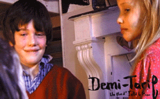

DEMI-TARIF (Half price)
Isild le Besco | Frankreich 2004 | 63 Min.
Format: 35mm
Material: MiniDV
Originalsprache: Französisch
Drehbuch: Isild le Besco
Kamera: Jowan le Besco
Schnitt: Isild le Besco
Ton: Frank Desmoulins, Daniel Sobrino
Mit Kolia Litscher, Lila Salet, Cindy David u.a.
Produktion: Catherine Belkhodja (Karedas)
www.demitarif.lefilm.free.fr
Filmisches Gedicht über drei Kinder, die alleingelassen von der Mutter durch Paris streifen, das dabei wie ein großer Spielplatz erscheint. Ihre Freiheit und Unbekümmertheit lässt sie wie die "Zazies in der Metro" des neuen Jahrtausends erscheinen. Doch die Zeit der Unschuld währt nicht lange. Bald müssen sie erfahren, dass es anonyme Instanzen gibt, die einem die Grenzen des eigenen Tuns schmerzhaft bewusst machen und die Freiheit limitieren.
„Chris Marker bezeichnet den Film als ‚Vorbote einer neuen Nouvelle Vague’, gar als den ‚neuen "Außer Atem"’. Nicht dass es irgendeine Ähnlichkeit in der Geschichte oder dem Stil gäbe, nur die Seherfahrung sei hierbei eine identische. Wobei die unbeschränkten Möglichkeiten der Mini DV Kamera die Perspektive der Kinder übernimmt und so dem Zuschauer einen ganz speziellen Blick auf ihre eigene Welt erhaschen lässt.“
- Sandra den Hamer, International Filmfestival Rotterdam
Isild le Besco, geb. 1982. Seit ihrem achten Lebensjahr ist sie im Kino präsent. Sie spielte in den Filmen "Adolphe" (2002), "Le Coût de la Vie" (2003), "A tout de suite" (2004) und "L’Intouchable" (2006) von Benoît Jacquot und war zweimal für den César nominiert, für ihre Rollen in "Sade" und "Roberto Succo". Sie ist die Schwester von Maïwenn, deren Film "Pardonnez-moi" ebenfalls bei Underdox 02 präsentiert wird
Filme: T’es où? 2000 | Demi-Tarif 2004
zurück
|